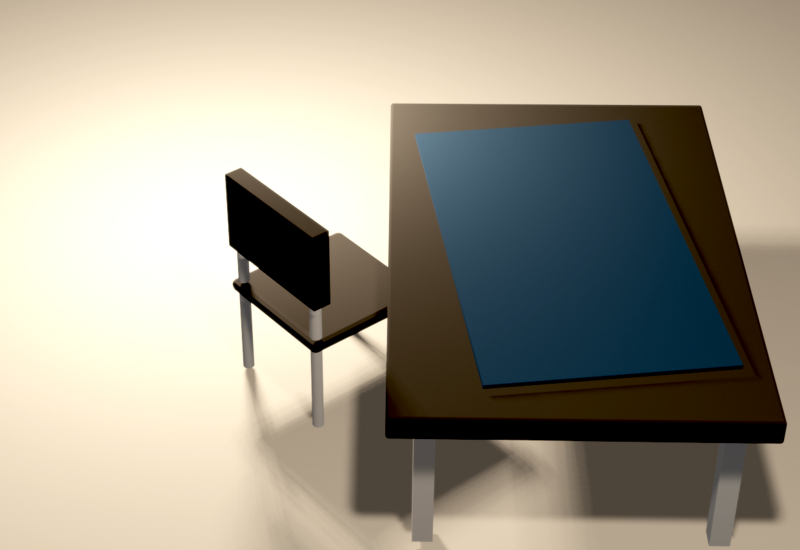

2022/10/1
ちょっと前までp5.jsを学習しようとしてたんですが、WebGLゲームを見てから「3dええなぁ...」と思い始め、Blenderに手を染めてしまいました...
風の噂だと難しいと聞いてたので身構えていましたが、Youtubeの解説動画がわかりやすかったのでスムーズにできました。
（参考にさせてもらった動画 → 「 【初心者向け】世界一やさしいBlender入門！使い方＆導入〜画像作成までを徹底解説【最短で3DCGデビュー】」）
//ほぼ解説動画通りに作っただけなので、この画像の価値は無に等しいです。
Blenderのショートカットキーが多く、間違えて押したらモード変わったりしたので、「ショートカットキー一覧」をブックマークに登録しました。